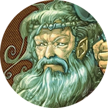
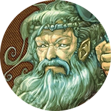

Cernunnos, uma das mais antigas divindades celtas, é uma figura notável na mitologia, frequentemente retratado com características distintivas, como orelhas e chifres de um cervo. Ele é reverenciado como o senhor dos animais, uma entidade que governa sobre a fauna, e é frequentemente representado em estreita conexão com os animais, alimentando-os e simbolizando a interligação entre os humanos e o reino animal. A presença de orelhas e chifres de cervo em sua representação é altamente simbólica. O cervo era um animal venerado pelos celtas, associado à renovação, à fertilidade e à espiritualidade. Cernunnos personifica esses atributos, representando não apenas a fauna, mas também os ciclos da natureza, a renovação e o poder espiritual que reside nas criaturas da floresta. Além disso, a capacidade de Cernunnos se metamorfosear em formas como cobra, lobo ou cervo destaca sua natureza mística e sua conexão com os reinos terrestres e espirituais. Essa habilidade de transformação simboliza a fluidez da vida, a mudança constante e a dualidade de aspectos, enfatizando a complexidade da existência e a interconexão de todas as formas de vida. Cernunnos, como uma divindade mutável e multifacetada, personifica a riqueza e a diversidade da mitologia celta. Sua presença é um testemunho da profunda reverência que os celtas tinham pela natureza e pelos animais, bem como sua compreensão da complexidade da vida e da espiritualidade.
Cernunnos